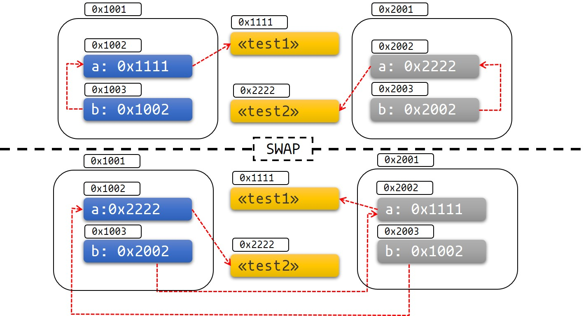

Futures Explained in 200 Lines of Rust
This book aims to explain Futures in Rust using an example driven approach.
The goal is to get a better understanding of "async" in Rust by creating a toy
runtime consisting of a Reactor and an Executor, and our own futures which
we can run concurrently.
We'll start off a bit differently than most other explanations. Instead of
deferring some of the details about what Futures are and how they're
implemented, we tackle that head on first.
I learn best when I can take basic understandable concepts and build piece by piece of these basic building blocks until everything is understood. This way, most questions will be answered and explored up front and the conclusions later on seems natural.
I've limited myself to a 200 line main example so that we need keep this fairly brief.
In the end I've made some reader exercises you can do if you want to fix some of the most glaring omissions and shortcuts we took and create a slightly better example yourself.
This book is developed in the open, and contributions are welcome. You'll find the repository for the book itself here. The final example which you can clone, fork or copy can be found here
What does this book give you that isn't covered elsewhere?
There are many good resources and examples already. First
of all, this book will focus on Futures and async/await specifically and
not in the context of any specific runtime.
Secondly, I've always found small runnable examples very exiting to learn from. Thanks to Mdbook the examples can even be edited and explored further by uncommenting certain lines or adding new ones yourself. I use that quite a but throughout so keep an eye out when reading through editable code segments.
It's all code that you can download, play with and learn from.
We'll and end up with an understandable example including a Future
implementation, an Executor and a Reactor in less than 200 lines of code.
We don't rely on any dependencies or real I/O which means it's very easy to
explore further and try your own ideas.
Credits and thanks
I'll like to take the chance of thanking the people behind mio, tokio,
async_std, Futures, libc, crossbeam and many other libraries which so
much is built upon. Even the RFCs that much of the design is built upon is
very well written and very helpful. So thanks!
Some Background Information
Before we go into the details about Futures in Rust, let's take a quick look at the alternatives for handling concurrent programming in general and some pros and cons for each of them.
While we do that we'll get some information on concurrency which will make it easier for us when we dive in to Futures specifically.
For fun, I've added a small snipped of runnable code with most of the examples. If you're like me, things get way more interesting then and maybe you'll se some things you haven't seen before along the way.
Threads provided by the operating system
Now, one way of accomplishing this is letting the OS take care of everything for us. We do this by simply spawning a new OS thread for each task we want to accomplish and write code like we normally would.
The runtime we use to handle concurrency for us is the operating system itself.
Advantages:
- Simple
- Easy to use
- Switching between tasks is reasonably fast
- You get parallelism for free
Drawbacks:
- OS level threads come with a rather large stack. If you have many tasks waiting simultaneously (like you would in a web-server under heavy load) you'll run out of memory pretty fast.
- There are a lot of syscalls involved. This can be pretty costly when the number of tasks is high.
- The OS has many things it needs to handle. It might not switch back to your thread as fast as you'd wish.
- Might not be an option on some systems
Using OS threads in Rust looks like this:
use std::thread; fn main() { println!("So we start the program here!"); let t1 = thread::spawn(move || { thread::sleep(std::time::Duration::from_millis(200)); println!("We create tasks which gets run when they're finished!"); }); let t2 = thread::spawn(move || { thread::sleep(std::time::Duration::from_millis(100)); println!("We can even chain callbacks..."); let t3 = thread::spawn(move || { thread::sleep(std::time::Duration::from_millis(50)); println!("...like this!"); }); t3.join().unwrap(); }); println!("While our tasks are executing we can do other stuff here."); t1.join().unwrap(); t2.join().unwrap(); }
OS threads sure has some pretty big advantages. So why all this talk about "async" and concurrency in the first place?
First of all. For computers to be efficient it needs to multitask. Once you start to look under the covers (like how an operating system works) you'll see concurrency everywhere. It's very fundamental in everything we do.
Secondly, we have the web. Webservers is all about I/O and handling small tasks (requests). When the number of small tasks is large it's not a good fit for OS threads as of today because of the memory they require and the overhead involved when creating new threads. This gets even more relevant when the load is variable which means the current number of tasks a program has at any point in time is unpredictable. That's why you'll see so many async web frameworks and database drivers today.
However, for a huge number of problems, the standard OS threads will often be the right solution. So, just think twice about your problem before you reach for an async library.
Now, let's look at some other options for multitasking. They all have in common that they implement a way to do multitasking by having a "userland" runtime:
Green threads
Green threads has been popularized by GO in the recent years. Green threads uses the same basic technique as operating systems does to handle concurrency.
Green threads are implemented by setting up a stack for each task you want to execute and make the CPU "jump" from one stack to another to switch between tasks.
The typical flow will be like this:
- Run som non-blocking code
- Make a blocking call to some external resource
- CPU jumps to the "main" thread which schedules a different thread to run and "jumps" to that stack
- Run some non-blocking code on the new thread until a new blocking call or the task is finished
- "jumps" back to the "main" thread and so on
These "jumps" are know as context switches. Your OS is doing it many times each second as you read this.
Advantages:
- Simple to use. The code will look like it does when using OS threads.
- A "context switch" is reasonably fast
- Each stack only gets a little memory to start with so you can have hundred of thousands of green threads running.
- It's easy to incorporate preemtion which puts a lot of control in the hands of the runtime implementors.
Drawbacks:
- The stacks might need to grow. Solving this is not easy and will have a cost.
- You need to save all the CPU state on every switch
- It's not a zero cost abstraction (Rust had green threads early on and this was one of the reasons they were removed).
- Complicated to implement correctly if you want to support many different platforms.
If you were to implement green threads in Rust, it could look something like this:
The example presented below is an adapted example from an earlier gitbook I wrote about green threads called Green Threads Explained in 200 lines of Rust. If you want to know what's going on you'll find everything explained in detail in that book. The code below is wildly unsafe and it's just to show a real example. It's not in any way meant to showcase "best practice". Just so we're on the same page.
#![feature(asm)] #![feature(naked_functions)] use std::ptr; const DEFAULT_STACK_SIZE: usize = 1024 * 1024 * 2; const MAX_THREADS: usize = 4; static mut RUNTIME: usize = 0; pub struct Runtime { threads: Vec<Thread>, current: usize, } #[derive(PartialEq, Eq, Debug)] enum State { Available, Running, Ready, } struct Thread { id: usize, stack: Vec<u8>, ctx: ThreadContext, state: State, task: Option<Box<dyn Fn()>>, } #[derive(Debug, Default)] #[repr(C)] struct ThreadContext { rsp: u64, r15: u64, r14: u64, r13: u64, r12: u64, rbx: u64, rbp: u64, thread_ptr: u64, } impl Thread { fn new(id: usize) -> Self { Thread { id, stack: vec![0_u8; DEFAULT_STACK_SIZE], ctx: ThreadContext::default(), state: State::Available, task: None, } } } impl Runtime { pub fn new() -> Self { let base_thread = Thread { id: 0, stack: vec![0_u8; DEFAULT_STACK_SIZE], ctx: ThreadContext::default(), state: State::Running, task: None, }; let mut threads = vec![base_thread]; threads[0].ctx.thread_ptr = &threads[0] as *const Thread as u64; let mut available_threads: Vec<Thread> = (1..MAX_THREADS).map(|i| Thread::new(i)).collect(); threads.append(&mut available_threads); Runtime { threads, current: 0, } } pub fn init(&self) { unsafe { let r_ptr: *const Runtime = self; RUNTIME = r_ptr as usize; } } pub fn run(&mut self) -> ! { while self.t_yield() {} std::process::exit(0); } fn t_return(&mut self) { if self.current != 0 { self.threads[self.current].state = State::Available; self.t_yield(); } } fn t_yield(&mut self) -> bool { let mut pos = self.current; while self.threads[pos].state != State::Ready { pos += 1; if pos == self.threads.len() { pos = 0; } if pos == self.current { return false; } } if self.threads[self.current].state != State::Available { self.threads[self.current].state = State::Ready; } self.threads[pos].state = State::Running; let old_pos = self.current; self.current = pos; unsafe { switch(&mut self.threads[old_pos].ctx, &self.threads[pos].ctx); } true } pub fn spawn<F: Fn() + 'static>(f: F){ unsafe { let rt_ptr = RUNTIME as *mut Runtime; let available = (*rt_ptr) .threads .iter_mut() .find(|t| t.state == State::Available) .expect("no available thread."); let size = available.stack.len(); let s_ptr = available.stack.as_mut_ptr(); available.task = Some(Box::new(f)); available.ctx.thread_ptr = available as *const Thread as u64; ptr::write(s_ptr.offset((size - 8) as isize) as *mut u64, guard as u64); ptr::write(s_ptr.offset((size - 16) as isize) as *mut u64, call as u64); available.ctx.rsp = s_ptr.offset((size - 16) as isize) as u64; available.state = State::Ready; } } } fn call(thread: u64) { let thread = unsafe { &*(thread as *const Thread) }; if let Some(f) = &thread.task { f(); } } #[naked] fn guard() { unsafe { let rt_ptr = RUNTIME as *mut Runtime; let rt = &mut *rt_ptr; println!("THREAD {} FINISHED.", rt.threads[rt.current].id); rt.t_return(); }; } pub fn yield_thread() { unsafe { let rt_ptr = RUNTIME as *mut Runtime; (*rt_ptr).t_yield(); }; } #[naked] #[inline(never)] unsafe fn switch(old: *mut ThreadContext, new: *const ThreadContext) { asm!(" mov %rsp, 0x00($0) mov %r15, 0x08($0) mov %r14, 0x10($0) mov %r13, 0x18($0) mov %r12, 0x20($0) mov %rbx, 0x28($0) mov %rbp, 0x30($0) mov 0x00($1), %rsp mov 0x08($1), %r15 mov 0x10($1), %r14 mov 0x18($1), %r13 mov 0x20($1), %r12 mov 0x28($1), %rbx mov 0x30($1), %rbp mov 0x38($1), %rdi ret " : : "r"(old), "r"(new) : : "alignstack" ); } fn main() { let mut runtime = Runtime::new(); runtime.init(); Runtime::spawn(|| { println!("I haven't implemented a timer in this example."); yield_thread(); println!("Finally, notice how the tasks are executed concurrently."); }); Runtime::spawn(|| { println!("But we can still nest tasks..."); Runtime::spawn(|| { println!("...like this!"); }) }); runtime.run(); }
Still hanging in there? Good. Don't get frustrated if the code above is difficult to understand. If I hadn't written it myself I would probably feel the same. You can always go back and read the book which explains it later.
Callback based approaches
You probably already know what we're going to talk about in the next paragraphs from Javascript which I assume most know.
If your exposure to Javascript has given you any sorts of PTSD earlier in life, close your eyes now and scroll down for 2-3 seconds. You'll find a link there that takes you to safety.
The whole idea behind a callback based approach is to save a pointer to a set of instructions we want to run later. We can save that pointer on the stack before we yield control to the runtime, or in some sort of collection as we do below.
The basic idea of not involving threads as a primary way to achieve concurrency is the common denominator for the rest of the approaches. Including the one Rust uses today which we'll soon get to.
Advantages:
- Easy to implement in most languages
- No context switching
- Low memory overhead (in most cases)
Drawbacks:
- Each task must save the state it needs for later, the memory usage will grow linearly with the number of callbacks in a chain of computations.
- Can be hard to reason about, many people already know this as as "callback hell".
- It's a very different way of writing a program, and it can be difficult to get an understanding of the program flow.
- Sharing state between tasks is a hard problem in Rust using this approach due to it's ownership model.
An extremely simplified example of a how a callback based approach could look like is:
fn program_main() { println!("So we start the program here!"); set_timeout(200, || { println!("We create tasks which gets run when they're finished!"); }); set_timeout(100, || { println!("We can even chain callbacks..."); set_timeout(50, || { println!("...like this!"); }) }); println!("While our tasks are executing we can do other stuff here."); } fn main() { RT.with(|rt| rt.run(program_main)); } use std::sync::mpsc::{channel, Receiver, Sender}; use std::{cell::RefCell, collections::HashMap, thread}; thread_local! { static RT: Runtime = Runtime::new(); } struct Runtime { callbacks: RefCell<HashMap<usize, Box<dyn FnOnce() -> ()>>>, next_id: RefCell<usize>, evt_sender: Sender<usize>, evt_reciever: Receiver<usize>, } fn set_timeout(ms: u64, cb: impl FnOnce() + 'static) { RT.with(|rt| { let id = *rt.next_id.borrow(); *rt.next_id.borrow_mut() += 1; rt.callbacks.borrow_mut().insert(id, Box::new(cb)); let evt_sender = rt.evt_sender.clone(); thread::spawn(move || { thread::sleep(std::time::Duration::from_millis(ms)); evt_sender.send(id).unwrap(); }); }); } impl Runtime { fn new() -> Self { let (evt_sender, evt_reciever) = channel(); Runtime { callbacks: RefCell::new(HashMap::new()), next_id: RefCell::new(1), evt_sender, evt_reciever, } } fn run(&self, program: fn()) { program(); for evt_id in &self.evt_reciever { let cb = self.callbacks.borrow_mut().remove(&evt_id).unwrap(); cb(); if self.callbacks.borrow().is_empty() { break; } } } }
We're keeping this super simple, and you might wonder what's the difference between this approach and the one using OS threads an passing in the callbacks to the OS threads directly. The difference is that the callbacks are run on the same thread using this example. The OS threads we create are basically just used as timers.
From callbacks to promises
You might start to wonder by now, when are we going to talk about Futures?
Well, we're getting there. You see promises, futures and other names for
deferred computations are often used interchangeably. There are formal
differences between them but we'll not cover that here but it's worth
explaining promises a bit since they're widely known due to beeing used in
Javascript and will serve as segway to Rusts Futures.
First of all, many languages has a concept of promises but I'll use the ones from Javascript in the examples below.
Promises is one way to deal with the complexity which comes with a callback based approach.
Instead of:
setTimer(200, () => {
setTimer(100, () => {
setTimer(50, () => {
console.log("I'm the last one");
});
});
});
We can to this:
function timer(ms) {
return new Promise((resolve) => setTimeout(resolve, ms))
}
timer(200)
.then(() => return timer(100))
.then(() => return timer(50))
.then(() => console.log("I'm the last one));
The change is even more substantial under the hood. You see, promises return
a state machine which can be in one of three states: pending, fulfilled or
rejected. So when we call timer(200) in the sample above, we get back a
promise in the state pending.
Since promises are re-written as state machines they also enable an even better syntax where we now can write our last example like this:
async function run() {
await timer(200);
await timer(100);
await timer(50);
console.log("I'm the last one");
}
You can consider the run function a pausable task consisting of several
sub-tasks. On each "await" point it yields control to the scheduler (in this
case it's the well known Javascript event loop). Once one of the sub-tasks changes
state to either fulfilled or rejected the task is sheduled to continue to
the next step.
Syntactically, Rusts Futures 1.0 was a lot like the promises example above and Rusts Futures 3.0 is a lot like async/await in our last example.
Now this is also where the similarities with Rusts Futures stop. The reason we go through all this is to get an introduction and get into the right mindset for exploring Rusts Futures.
To avoid confusion later on: There is one difference you should know. Javascript promises are eagerly evaluated. That means that once it's created, it starts running a task. Rusts Futures on the other hand is lazily evaluated. They need to be polled once before they do any work. You'll see in a moment.
Futures in Rust
Overview:
- High level introduction to concurrency in Rust
- Knowing what Rust provides and not when working with async code
- Understanding why we need a runtime-library in Rust
- Getting pointers to further reading on concurrency in general
Futures
So what is a future?
A future is a representation of some operation which will complete in the future.
Async in Rust uses a Poll based approach, in which an asynchronous task will
have three phases.
- The Poll phase. A Future is polled which result in the task progressing until a point where it can no longer make progress. We often refer to the part of the runtime which polls a Future as an executor.
- The Wait phase. An event source, most often referred to as a reactor, registers that a Future is waiting for an event to happen and makes sure that it will wake the Future when that event is ready.
- The Wake phase. The event happens and the Future is woken up. It's now up to the executor which polled the Future in step 1 to schedule the future to be polled again and make further progress until it completes or reaches a new point where it can't make further progress and the cycle repeats.
Now, when we talk about futures I find it useful to make a distinction between non-leaf futures and leaf futures early on because in practice they're pretty different from one another.
Leaf futures
Runtimes create leaf futures which represents a resource like a socket.
// stream is a **leaf-future**
let mut stream = tokio::net::TcpStream::connect("127.0.0.1:3000");
Operations on these resources, like a Read on a socket, will be non-blocking
and return a future which we call a leaf future since it's the future which
we're actually waiting on.
It's unlikely that you'll implement a leaf future yourself unless you're writing a runtime, but we'll go through how they're constructed in this book as well.
It's also unlikely that you'll pass a leaf-future to a runtime and run it to completion alone as you'll understand by reading the next paragraph.
Non-leaf-futures
Non-leaf-futures is the kind of futures we as users of a runtime writes
ourselves using the async keyword to create a task which can be run on the
executor.
The bulk of an async program will consist of non-leaf-futures, which are a kind
of pause-able computation. This is an important distinction since these futures represents a set of operations. Often, such a task will await a leaf future
as one of many operations to complete the task.
// Non-leaf-future
let non_leaf = async {
let mut stream = TcpStream::connect("127.0.0.1:3000").await.unwrap();// <- yield
println!("connected!");
let result = stream.write(b"hello world\n").await; // <- yield
println!("message sent!");
...
};
The key to these tasks is that they're able to yield control to the runtime's scheduler and then resume execution again where it left off at a later point.
In contrast to leaf futures, these kind of futures does not themselves represent an I/O resource. When we poll these futures we either run some code or we yield to the scheduler while waiting for some resource to signal us that it's ready so we can resume where we left off.
Runtimes
Languages like C#, JavaScript, Java, GO and many others comes with a runtime for handling concurrency. So if you come from one of those languages this will seem a bit strange to you.
Rust is different from these languages in the sense that Rust doesn't come with a runtime for handling concurrency, so you need to use a library which provide this for you.
Quite a bit of complexity attributed to Futures are actually complexity rooted
in runtimes. Creating an efficient runtime is hard.
Learning how to use one correctly requires quite a bit of effort as well, but you'll see that there are several similarities between these kind of runtimes so learning one makes learning the next much easier.
The difference between Rust and other languages is that you have to make an active choice when it comes to picking a runtime. Most often, in other languages you'll just use the one provided for you.
An async runtime can be divided into two parts:
- The Executor
- The Reactor
When Rusts Futures were designed there was a desire to separate the job of
notifying a Future that it can do more work, and actually doing the work
on the Future.
You can think of the former as the reactor's job, and the latter as the
executors job. These two parts of a runtime interacts using the Waker type.
The two most popular runtimes for Futures as of writing this is:
What Rust's standard library takes care of
- A common interface representing an operation which will be completed in the
future through the
Futuretrait. - An ergonomic way of creating tasks which can be suspended and resumed through
the
asyncandawaitkeywords. - A defined interface wake up a suspended task through the
Wakertype.
That's really what Rusts standard library does. As you see there is no definition of non-blocking I/O, how these tasks are created or how they're run.
Bonus section
If you find the concepts of concurrency and async programming confusing in
general, I know where you're coming from and I have written some resources to
try to give a high level overview that will make it easier to learn Rusts
Futures afterwards:
- Async Basics - The difference between concurrency and parallelism
- Async Basics - Async history
- Async Basics - Strategies for handling I/O
- Async Basics - Epoll, Kqueue and IOCP
Learning these concepts by studying futures is making it much harder than it needs to be, so go on and read these chapters if you feel a bit unsure.
I'll be right here when you're back.
However, if you feel that you have the basics covered, then let's get moving!
Waker and Context
Relevant for:
- Understanding how the Waker object is constructed
- Learning how the runtime know when a leaf-future can resume
- Learning the basics of dynamic dispatch and trait objects
The
Wakertype is described as part of RFC#2592.
The Waker
The Waker type allows for a loose coupling between the reactor-part and the executor-part of a runtime.
By having a wake up mechanism that is not tied to the thing that executes the future, runtime-implementors can come up with interesting new wake-up mechanisms. An example of this can be spawning a thread to do some work that eventually notifies the future, completely independent of the current runtime.
Without a waker, the executor would be the only way to notify a running task, whereas with the waker, we get a loose coupling where it's easy to extend the ecosystem with new leaf-level tasks.
If you want to read more about the reasoning behind the
Wakertype I can recommend Withoutboats articles series about them.
The Context type
As the docs state as of now this type only wrapps a Waker, but it gives some
flexibility for future evolutions of the API in Rust. The context can hold
task-local storage and provide space for debugging hooks in later iterations.
Understanding the Waker
One of the most confusing things we encounter when implementing our own Futures
is how we implement a Waker . Creating a Waker involves creating a vtable
which allows us to use dynamic dispatch to call methods on a type erased trait
object we construct our selves.
If you want to know more about dynamic dispatch in Rust I can recommend an article written by Adam Schwalm called Exploring Dynamic Dispatch in Rust.
Let's explain this a bit more in detail.
Fat pointers in Rust
To get a better understanding of how we implement the Waker in Rust, we need
to take a step back and talk about some fundamentals. Let's start by taking a
look at the size of some different pointer types in Rust.
Run the following code (You'll have to press "play" to see the output):
# use std::mem::size_of; trait SomeTrait { } fn main() { println!("======== The size of different pointers in Rust: ========"); println!("&dyn Trait:-----{}", size_of::<&dyn SomeTrait>()); println!("&[&dyn Trait]:--{}", size_of::<&[&dyn SomeTrait]>()); println!("Box<Trait>:-----{}", size_of::<Box<SomeTrait>>()); println!("&i32:-----------{}", size_of::<&i32>()); println!("&[i32]:---------{}", size_of::<&[i32]>()); println!("Box<i32>:-------{}", size_of::<Box<i32>>()); println!("&Box<i32>:------{}", size_of::<&Box<i32>>()); println!("[&dyn Trait;4]:-{}", size_of::<[&dyn SomeTrait; 4]>()); println!("[i32;4]:--------{}", size_of::<[i32; 4]>()); }
As you see from the output after running this, the sizes of the references varies. Many are 8 bytes (which is a pointer size on 64 bit systems), but some are 16 bytes.
The 16 byte sized pointers are called "fat pointers" since they carry extra information.
Example &[i32] :
- The first 8 bytes is the actual pointer to the first element in the array (or part of an array the slice refers to)
- The second 8 bytes is the length of the slice.
Example &dyn SomeTrait:
This is the type of fat pointer we'll concern ourselves about going forward.
&dyn SomeTrait is a reference to a trait, or what Rust calls a trait object.
The layout for a pointer to a trait object looks like this:
- The first 8 bytes points to the
datafor the trait object - The second 8 bytes points to the
vtablefor the trait object
The reason for this is to allow us to refer to an object we know nothing about except that it implements the methods defined by our trait. To accomplish this we use dynamic dispatch.
Let's explain this in code instead of words by implementing our own trait object from these parts:
This is an example of editable code. You can change everything in the example and try to run it. If you want to go back, press the undo symbol. Keep an eye out for these as we go forward. Many examples will be editable.
// A reference to a trait object is a fat pointer: (data_ptr, vtable_ptr) trait Test { fn add(&self) -> i32; fn sub(&self) -> i32; fn mul(&self) -> i32; } // This will represent our home brewn fat pointer to a trait object #[repr(C)] struct FatPointer<'a> { /// A reference is a pointer to an instantiated `Data` instance data: &'a mut Data, /// Since we need to pass in literal values like length and alignment it's /// easiest for us to convert pointers to usize-integers instead of the other way around. vtable: *const usize, } // This is the data in our trait object. It's just two numbers we want to operate on. struct Data { a: i32, b: i32, } // ====== function definitions ====== fn add(s: &Data) -> i32 { s.a + s.b } fn sub(s: &Data) -> i32 { s.a - s.b } fn mul(s: &Data) -> i32 { s.a * s.b } fn main() { let mut data = Data {a: 3, b: 2}; // vtable is like special purpose array of pointer-length types with a fixed // format where the three first values has a special meaning like the // length of the array is encoded in the array itself as the second value. let vtable = vec![ 0, // pointer to `Drop` (which we're not implementing here) 6, // lenght of vtable 8, // alignment // we need to make sure we add these in the same order as defined in the Trait. add as usize, // function pointer - try changing the order of `add` sub as usize, // function pointer - and `sub` to see what happens mul as usize, // function pointer ]; let fat_pointer = FatPointer { data: &mut data, vtable: vtable.as_ptr()}; let test = unsafe { std::mem::transmute::<FatPointer, &dyn Test>(fat_pointer) }; // And voalá, it's now a trait object we can call methods on println!("Add: 3 + 2 = {}", test.add()); println!("Sub: 3 - 2 = {}", test.sub()); println!("Mul: 3 * 2 = {}", test.mul()); }
Now that you know this you also know why how we implement the Waker type
in Rust.
Later on, when we implement our own Waker we'll actually set up a vtable
like we do here to and knowing why we do that and how it works will make this
much less mysterious.
Bonus section
You might wonder why the Waker was implemented like this and not just as a
normal trait?
The reason is flexibility. Implementing the Waker the way we do here gives a lot of flexibility of choosing what memory management scheme to use.
The "normal" way is by using an Arc to use reference count keep track of when
a Waker object can be dropped. However, this is not the only way, you could also
use purely global functions and state, or any other way you wish.
This leaves a lot of options on the table for runtime implementors.
Generators
Relevant for:
- Understanding how the async/await syntax works since it's how
awaitis implemented- Knowing why we need
Pin- Understanding why Rusts async model is very efficient
The motivation for
Generatorscan be found in RFC#2033. It's very well written and I can recommend reading through it (it talks as much about async/await as it does about generators).
The second difficult part is understanding Generators and the Pin type. Since
they're related we'll start off by exploring generators first. By doing that
we'll soon get to see why we need to be able to "pin" some data to a fixed
location in memory and get an introduction to Pin as well.
Basically, there were three main options discussed when designing how Rust would handle concurrency:
- Stackful coroutines, better known as green threads.
- Using combinators.
- Stackless coroutines, better known as generators.
Stackful coroutines/green threads
I've written about green threads before. Go check out Green Threads Explained in 200 lines of Rust if you're interested.
Green threads uses the same mechanism as an OS does by creating a thread for each task, setting up a stack, save the CPU's state and jump from one task(thread) to another by doing a "context switch".
We yield control to the scheduler (which is a central part of the runtime in such a system) which then continues running a different task.
Rust had green threads once, but they were removed before it hit 1.0. The state
of execution is stored in each stack so in such a solution there would be no need
for async, await, Futures or Pin. All this would be implementation details for the library.
Combinators
Futures 1.0 used combinators. If you've worked with Promises in JavaScript,
you already know combinators. In Rust they look like this:
let future = Connection::connect(conn_str).and_then(|conn| {
conn.query("somerequest").map(|row|{
SomeStruct::from(row)
}).collect::<Vec<SomeStruct>>()
});
let rows: Result<Vec<SomeStruct>, SomeLibraryError> = block_on(future).unwrap();
While an effective solution there are mainly three downsides I'll focus on:
- The error messages produced could be extremely long and arcane
- Not optimal memory usage
- Did not allow to borrow across combinator steps.
Point #3, is actually a major drawback with Futures 1.0.
Not allowing borrows across suspension points ends up being very un-ergonomic and to accomplish some tasks it requires extra allocations or copying which is inefficient.
The reason for the higher than optimal memory usage is that this is basically a callback-based approach, where each closure stores all the data it needs for computation. This means that as we chain these, the memory required to store the needed state increases with each added step.
Stackless coroutines/generators
This is the model used in Rust today. It has a few notable advantages:
- It's easy to convert normal Rust code to a stackless coroutine using using async/await as keywords (it can even be done using a macro).
- No need for context switching and saving/restoring CPU state
- No need to handle dynamic stack allocation
- Very memory efficient
- Allows us to borrow across suspension points
The last point is in contrast to Futures 1.0. With async/await we can do this:
async fn myfn() {
let text = String::from("Hello world");
let borrowed = &text[0..5];
somefuture.await;
println!("{}", borrowed);
}
Generators in Rust are implemented as state machines. The memory footprint of a chain of computations is only defined by the largest footprint of any single step require. That means that adding steps to a chain of computations might not require any increased memory at all.
How generators work
In Nightly Rust today you can use the yield keyword. Basically using this
keyword in a closure, converts it to a generator. A closure could look like this
before we had a concept of Pin:
#![feature(generators, generator_trait)]
use std::ops::{Generator, GeneratorState};
fn main() {
let a: i32 = 4;
let mut gen = move || {
println!("Hello");
yield a * 2;
println!("world!");
};
if let GeneratorState::Yielded(n) = gen.resume() {
println!("Got value {}", n);
}
if let GeneratorState::Complete(()) = gen.resume() {
()
};
}
Early on, before there was a consensus about the design of Pin, this
compiled to something looking similar to this:
fn main() { let mut gen = GeneratorA::start(4); if let GeneratorState::Yielded(n) = gen.resume() { println!("Got value {}", n); } if let GeneratorState::Complete(()) = gen.resume() { () }; } // If you've ever wondered why the parameters are called Y and R the naming from // the original rfc most likely holds the answer enum GeneratorState<Y, R> { Yielded(Y), // originally called `Yield(Y)` Complete(R), // originally called `Return(R)` } trait Generator { type Yield; type Return; fn resume(&mut self) -> GeneratorState<Self::Yield, Self::Return>; } enum GeneratorA { Enter(i32), Yield1(i32), Exit, } impl GeneratorA { fn start(a1: i32) -> Self { GeneratorA::Enter(a1) } } impl Generator for GeneratorA { type Yield = i32; type Return = (); fn resume(&mut self) -> GeneratorState<Self::Yield, Self::Return> { // lets us get ownership over current state match std::mem::replace(&mut *self, GeneratorA::Exit) { GeneratorA::Enter(a1) => { /*|---code before yield---|*/ /*|*/ println!("Hello"); /*|*/ /*|*/ let a = a1 * 2; /*|*/ /*|------------------------|*/ *self = GeneratorA::Yield1(a); GeneratorState::Yielded(a) } GeneratorA::Yield1(_) => { /*|----code after yield----|*/ /*|*/ println!("world!"); /*|*/ /*|-------------------------|*/ *self = GeneratorA::Exit; GeneratorState::Complete(()) } GeneratorA::Exit => panic!("Can't advance an exited generator!"), } } }
The
yieldkeyword was discussed first in RFC#1823 and in RFC#1832.
Now that you know that the yield keyword in reality rewrites your code to become a state machine,
you'll also know the basics of how await works. It's very similar.
Now, there are some limitations in our naive state machine above. What happens when you have a
borrow across a yield point?
We could forbid that, but one of the major design goals for the async/await syntax has been
to allow this. These kinds of borrows were not possible using Futures 1.0 so we can't let this
limitation just slip and call it a day yet.
Instead of discussing it in theory, let's look at some code.
We'll use the optimized version of the state machines which is used in Rust today. For a more in depth explanation see Tyler Mandry's excellent article: How Rust optimizes async/await
let mut gen = move || {
let to_borrow = String::from("Hello");
let borrowed = &to_borrow;
yield borrowed.len();
println!("{} world!", borrowed);
};
Now what does our rewritten state machine look like with this example?
# #![allow(unused_variables)] #fn main() { # // If you've ever wondered why the parameters are called Y and R the naming from # // the original rfc most likely holds the answer # enum GeneratorState<Y, R> { # // originally called `CoResult` # Yielded(Y), // originally called `Yield(Y)` # Complete(R), // originally called `Return(R)` # } # # trait Generator { # type Yield; # type Return; # fn resume(&mut self) -> GeneratorState<Self::Yield, Self::Return>; # } enum GeneratorA { Enter, Yield1 { to_borrow: String, borrowed: &String, // uh, what lifetime should this have? }, Exit, } # impl GeneratorA { # fn start() -> Self { # GeneratorA::Enter # } # } impl Generator for GeneratorA { type Yield = usize; type Return = (); fn resume(&mut self) -> GeneratorState<Self::Yield, Self::Return> { // lets us get ownership over current state match std::mem::replace(&mut *self, GeneratorA::Exit) { GeneratorA::Enter => { let to_borrow = String::from("Hello"); let borrowed = &to_borrow; let res = borrowed.len(); *self = GeneratorA::Yield1 {to_borrow, borrowed}; GeneratorState::Yielded(res) } GeneratorA::Yield1 {to_borrow, borrowed} => { println!("Hello {}", borrowed); *self = GeneratorA::Exit; GeneratorState::Complete(()) } GeneratorA::Exit => panic!("Can't advance an exited generator!"), } } } #}
If you try to compile this you'll get an error (just try it yourself by pressing play).
What is the lifetime of &String. It's not the same as the lifetime of Self. It's not static.
Turns out that it's not possible for us in Rusts syntax to describe this lifetime, which means, that
to make this work, we'll have to let the compiler know that we control this correctly ourselves.
That means turning to unsafe.
Let's try to write an implementation that will compiler using unsafe. As you'll
see we end up in a self referential struct. A struct which holds references
into itself.
As you'll notice, this compiles just fine!
pub fn main() { let mut gen = GeneratorA::start(); let mut gen2 = GeneratorA::start(); if let GeneratorState::Yielded(n) = gen.resume() { println!("Got value {}", n); } // If you uncomment this, very bad things can happen. This is why we need `Pin` // std::mem::swap(&mut gen, &mut gen2); if let GeneratorState::Yielded(n) = gen2.resume() { println!("Got value {}", n); } // if you uncomment `mem::swap`.. this should now start gen2. if let GeneratorState::Complete(()) = gen.resume() { () }; } enum GeneratorState<Y, R> { Yielded(Y), // originally called `Yield(Y)` Complete(R), // originally called `Return(R)` } trait Generator { type Yield; type Return; fn resume(&mut self) -> GeneratorState<Self::Yield, Self::Return>; } enum GeneratorA { Enter, Yield1 { to_borrow: String, borrowed: *const String, // Normally you'll see `std::ptr::NonNull` used instead of *ptr }, Exit, } impl GeneratorA { fn start() -> Self { GeneratorA::Enter } } impl Generator for GeneratorA { type Yield = usize; type Return = (); fn resume(&mut self) -> GeneratorState<Self::Yield, Self::Return> { // lets us get ownership over current state match self { GeneratorA::Enter => { let to_borrow = String::from("Hello"); let borrowed = &to_borrow; let res = borrowed.len(); // Trick to actually get a self reference *self = GeneratorA::Yield1 {to_borrow, borrowed: std::ptr::null()}; match self { GeneratorA::Yield1{to_borrow, borrowed} => *borrowed = to_borrow, _ => unreachable!(), }; GeneratorState::Yielded(res) } GeneratorA::Yield1 {borrowed, ..} => { let borrowed: &String = unsafe {&**borrowed}; println!("{} world", borrowed); *self = GeneratorA::Exit; GeneratorState::Complete(()) } GeneratorA::Exit => panic!("Can't advance an exited generator!"), } } }
Try to uncomment the line with
mem::swapand see the results.
While the example above compiles just fine, we expose consumers of this this API to both possible undefined behavior and other memory errors while using just safe Rust. This is a big problem!
But now, let's prevent this problem using Pin. We'll discuss
Pin more in the next chapter, but you'll get an introduction here by just
reading the comments.
#![feature(optin_builtin_traits)] // needed to implement `!Unpin` use std::pin::Pin; pub fn main() { let gen1 = GeneratorA::start(); let gen2 = GeneratorA::start(); // Before we pin the pointers, this is safe to do // std::mem::swap(&mut gen, &mut gen2); // constructing a `Pin::new()` on a type which does not implement `Unpin` is unsafe. // However, as you'll see in the start of the next chapter value pinned to // heap can be constructed while staying in safe Rust so we can use // that to avoid unsafe. You can also use crates like `pin_utils` to do // this safely, just remember that they use unsafe under the hood so it's // like using an already-reviewed unsafe implementation. let mut pinned1 = Box::pin(gen1); let mut pinned2 = Box::pin(gen2); // Uncomment these if you think it's safe to pin the values to the stack instead // (it is in this case). Remember to comment out the two previous lines first. //let mut pinned1 = unsafe { Pin::new_unchecked(&mut gen1) }; //let mut pinned2 = unsafe { Pin::new_unchecked(&mut gen2) }; if let GeneratorState::Yielded(n) = pinned1.as_mut().resume() { println!("Gen1 got value {}", n); } if let GeneratorState::Yielded(n) = pinned2.as_mut().resume() { println!("Gen2 got value {}", n); }; // This won't work // std::mem::swap(&mut gen, &mut gen2); // This will work but will just swap the pointers. Nothing inherently bad happens here. // std::mem::swap(&mut pinned1, &mut pinned2); let _ = pinned1.as_mut().resume(); let _ = pinned2.as_mut().resume(); } enum GeneratorState<Y, R> { // originally called `CoResult` Yielded(Y), // originally called `Yield(Y)` Complete(R), // originally called `Return(R)` } trait Generator { type Yield; type Return; fn resume(self: Pin<&mut Self>) -> GeneratorState<Self::Yield, Self::Return>; } enum GeneratorA { Enter, Yield1 { to_borrow: String, borrowed: *const String, // Normally you'll see `std::ptr::NonNull` used instead of *ptr }, Exit, } impl GeneratorA { fn start() -> Self { GeneratorA::Enter } } // This tells us that the underlying pointer is not safe to move after pinning. In this case, // only we as implementors "feel" this, however, if someone is relying on our Pinned pointer // this will prevent them from moving it. You need to enable the feature flag // `#![feature(optin_builtin_traits)]` and use the nightly compiler to implement `!Unpin`. // Normally, you would use `std::marker::PhantomPinned` to indicate that the // struct is `!Unpin`. impl !Unpin for GeneratorA { } impl Generator for GeneratorA { type Yield = usize; type Return = (); fn resume(self: Pin<&mut Self>) -> GeneratorState<Self::Yield, Self::Return> { // lets us get ownership over current state let this = unsafe { self.get_unchecked_mut() }; match this { GeneratorA::Enter => { let to_borrow = String::from("Hello"); let borrowed = &to_borrow; let res = borrowed.len(); // Trick to actually get a self reference. We can't reference // the `String` earlier since these references will point to the // location in this stack frame which will not be valid anymore // when this function returns. *this = GeneratorA::Yield1 {to_borrow, borrowed: std::ptr::null()}; match this { GeneratorA::Yield1{to_borrow, borrowed} => *borrowed = to_borrow, _ => unreachable!(), }; GeneratorState::Yielded(res) } GeneratorA::Yield1 {borrowed, ..} => { let borrowed: &String = unsafe {&**borrowed}; println!("{} world", borrowed); *this = GeneratorA::Exit; GeneratorState::Complete(()) } GeneratorA::Exit => panic!("Can't advance an exited generator!"), } } }
Now, as you see, the consumer of this API must either:
- Box the value and thereby allocating it on the heap
- Use
unsafeand pin the value to the stack. The user knows that if they move the value afterwards it will violate the guarantee they promise to uphold when they did their unsafe implementation.
Hopefully, after this you'll have an idea of what happens when you use the
yield or await keywords inside an async function, and why we need Pin if
we want to be able to safely borrow across yield/await points.
Bonus section - self referential generators in Rust today
Thanks to PR#45337 you can actually run code like the one in our
example in Rust today using the static keyword on nightly. Try it for
yourself:
#![feature(generators, generator_trait)] use std::ops::{Generator, GeneratorState}; pub fn main() { let gen1 = static || { let to_borrow = String::from("Hello"); let borrowed = &to_borrow; yield borrowed.len(); println!("{} world!", borrowed); }; let gen2 = static || { let to_borrow = String::from("Hello"); let borrowed = &to_borrow; yield borrowed.len(); println!("{} world!", borrowed); }; let mut pinned1 = Box::pin(gen1); let mut pinned2 = Box::pin(gen2); if let GeneratorState::Yielded(n) = pinned1.as_mut().resume() { println!("Gen1 got value {}", n); } if let GeneratorState::Yielded(n) = pinned2.as_mut().resume() { println!("Gen2 got value {}", n); }; let _ = pinned1.as_mut().resume(); let _ = pinned2.as_mut().resume(); }
Pin
Relevant for
- Understanding
GeneratorsandFutures- Knowing how to use
Pinis required when implementing your ownFuture- Understanding how to make self-referential types safe to use in Rust
- Learning how borrowing across
awaitpoints is accomplished
Pinwas suggested in RFC#2349
We already got a brief introduction of Pin in the previous chapters, so we'll
start off without any further introduction.
Let's jump strait to some definitions and then create 10 rules to remember when
we work with Pin.
Definitions
Pin consists of the Pin type and the Unpin marker. Pin's purpose in life is
to govern the rules that need to apply for types which implement !Unpin.
Pin is only relevant for pointers. A reference to an object is a pointer.
Yep, you're right, that's double negation right there. !Unpin means
"not-un-pin".
This naming scheme is Rust deliberately testing if you're too tired to safely implement a type with this marker. If you're starting to get confused by
!Unpin it's a good sign that it's time to lay down the work and start over
tomorrow with a fresh mind.
On a more serious note, I feel obliged to mention that there are valid reasons for the names that were chosen. If you want to you can read a bit of the discussion from the internals thread. One of the best takeaways from there in my eyes is this quote from
tmandry:Think of taking a thumbtack out of a cork board so you can tweak how a flyer looks. For Unpin types, this unpinning is directly supported by the type; you can do this implicitly. You can even swap out the object with another before you put the pin back. For other types, you must be much more careful.
For the next paragraph we'll rename these markers to:
!Unpin=MustStayandUnpin=CanMove
It just makes it much easier to talk about them.
Rules to remember
-
If
T: CanMove(which is the default), thenPin<'a, T>is entirely equivalent to&'a mut T. in other words:CanMovemeans it's OK for this type to be moved even when pinned, soPinwill have no effect on such a type. -
Getting a
&mut Tto a pinned pointer requires unsafe ifT: MustStay. In other words: requiring a pinned pointer to a type which isMustStayprevents the user of that API from moving that value unless it choses to writeunsafecode. -
Pinning does nothing special with memory allocation like putting it into some "read only" memory or anything fancy. It only tells the compiler that some operations on this value should be forbidden.
-
Most standard library types implement
CanMove. The same goes for most "normal" types you encounter in Rust.FuturesandGeneratorsare two exceptions. -
The main use case for
Pinis to allow self referential types, the whole justification for stabilizing them was to allow that. There are still corner cases in the API which are being explored. -
The implementation behind objects that are
MustStayis most likely unsafe. Moving such a type can cause the universe to crash. As of the time of writing this book, creating and reading fields of a self referential struct still requiresunsafe. -
You can add a
MustStaybound on a type on nightly with a feature flag, or by addingstd::marker::PhantomPinnedto your type on stable. -
You can either pin a value to memory on the stack or on the heap.
-
Pinning a
MustStaypointer to the stack requiresunsafe -
Pinning a
MustStaypointer to the heap does not requireunsafe. There is a shortcut for doing this usingBox::pin.
Unsafe code does not mean it's literally "unsafe", it only relieves the guarantees you normally get from the compiler. An
unsafeimplementation can be perfectly safe to do, but you have no safety net.
Let's take a look at an example:
use std::pin::Pin; fn main() { let mut test1 = Test::new("test1"); test1.init(); let mut test2 = Test::new("test2"); test2.init(); println!("a: {}, b: {}", test1.a(), test1.b()); std::mem::swap(&mut test1, &mut test2); // try commenting out this line println!("a: {}, b: {}", test2.a(), test2.b()); } #[derive(Debug)] struct Test { a: String, b: *const String, } impl Test { fn new(txt: &str) -> Self { let a = String::from(txt); Test { a, b: std::ptr::null(), } } fn init(&mut self) { let self_ref: *const String = &self.a; self.b = self_ref; } fn a(&self) -> &str { &self.a } fn b(&self) -> &String { unsafe {&*(self.b)} } }
Let's walk through this example since we'll be using it the rest of this chapter.
We have a self-referential struct Test. Test needs an init method to be
created which is strange but we'll need that to keep this example as short as
possible.
Test provides two methods to get a reference to the value of the fields
a and b. Since b is a reference to a we store it as a pointer since
the borrowing rules of Rust doesn't allow us to define this lifetime.
In our main method we first instantiate two instances of Test and print out
the value of the fields on test1. We get:
a: test1, b: test1
Next we swap the data stored at the memory location which test1 is pointing to
with the data stored at the memory location test2 is pointing to and vice a versa.
We should expect that printing the fields of test2 should display the same as
test1 (since the object we printed before the swap has moved there now).
a: test1, b: test2
The pointer to b still points to the old location. That location is now
occupied with the string "test2". This can be a bit hard to visualize so I made
a figure that i hope can help.
Fig 1: Before and after swap 
As you can see this results in unwanted behavior. It's easy to get this to segfault, show UB and fail in other spectacular ways as well.
If we change the example to using Pin instead:
use std::pin::Pin; use std::marker::PhantomPinned; #[derive(Debug)] struct Test { a: String, b: *const String, _marker: PhantomPinned, } impl Test { fn new(txt: &str) -> Self { let a = String::from(txt); Test { a, b: std::ptr::null(), // This makes our type `!Unpin` _marker: PhantomPinned, } } fn init(&mut self) { let self_ptr: *const String = &self.a; self.b = self_ptr; } fn a<'a>(self: Pin<&'a Self>) -> &'a str { &self.get_ref().a } fn b<'a>(self: Pin<&'a Self>) -> &'a String { unsafe { &*(self.b) } } } pub fn main() { let mut test1 = Test::new("test1"); test1.init(); let mut test1_pin = unsafe { Pin::new_unchecked(&mut test1) }; let mut test2 = Test::new("test2"); test2.init(); let mut test2_pin = unsafe { Pin::new_unchecked(&mut test2) }; println!( "a: {}, b: {}", Test::a(test1_pin.as_ref()), Test::b(test1_pin.as_ref()) ); // Try to uncomment this and see what happens // std::mem::swap(test1_pin.as_mut(), test2_pin.as_mut()); println!( "a: {}, b: {}", Test::a(test2_pin.as_ref()), Test::b(test2_pin.as_ref()) ); }
Now, what we've done here is pinning a stack address. That will always be
unsafe if our type implements !Unpin (aka MustStay).
We use some tricks here, including requiring an init. If we want to fix that
and let users avoid unsafe we need to pin our data on the heap instead.
Stack pinning will always depend on the current stack frame we're in, so we can't create a self referential object in one stack frame and return it since any pointers we take to "self" is invalidated.
The next example solves some of our friction at the cost of a heap allocation.
use std::pin::Pin; use std::marker::PhantomPinned; #[derive(Debug)] struct Test { a: String, b: *const String, _marker: PhantomPinned, } impl Test { fn new(txt: &str) -> Pin<Box<Self>> { let a = String::from(txt); let t = Test { a, b: std::ptr::null(), _marker: PhantomPinned, }; let mut boxed = Box::pin(t); let self_ptr: *const String = &boxed.as_ref().a; unsafe { boxed.as_mut().get_unchecked_mut().b = self_ptr }; boxed } fn a<'a>(self: Pin<&'a Self>) -> &'a str { &self.get_ref().a } fn b<'a>(self: Pin<&'a Self>) -> &'a String { unsafe { &*(self.b) } } } pub fn main() { let mut test1 = Test::new("test1"); let mut test2 = Test::new("test2"); println!("a: {}, b: {}",test1.as_ref().a(), test1.as_ref().b()); // Try to uncomment this and see what happens // std::mem::swap(&mut test1, &mut test2); println!("a: {}, b: {}",test2.as_ref().a(), test2.as_ref().b()); }
The fact that boxing (heap allocating) a value that implements !Unpin is safe
makes sense. Once the data is allocated on the heap it will have a stable address.
There is no need for us as users of the API to take special care and ensure that the self-referential pointer stays valid.
There are ways to safely give some guarantees on stack pinning as well, but right now you need to use a crate like pin_project to do that.
Projection/structural pinning
In short, projection is a programming language term. mystruct.field1 is a
projection. Structural pinning is using Pin on fields. This has several
caveats and is not something you'll normally see so I refer to the documentation
for that.
Pin and Drop
The Pin guarantee exists from the moment the value is pinned until it's dropped.
In the Drop implementation you take a mutable reference to self, which means
extra care must be taken when implementing Drop for pinned types.
Putting it all together
This is exactly what we'll do when we implement our own Futures stay tuned,
we're soon finished.
Futures in Rust
We'll create our own Futures together with a fake reactor and a simple
executor which allows you to edit, run an play around with the code right here
in your browser.
I'll walk you through the example, but if you want to check it out closer, you can always clone the repository and play around with the code yourself.
There are several branches explained in the readme, but two are
relevant for this chapter. The main branch is the example we go through here,
and the basic_example_commented branch is this example with extensive
comments.
If you want to follow along as we go through, initialize a new cargo project by creating a new folder and run
cargo initinside it. Everything we write here will be inmain.rs
Implementing our own Futures
Let's start off by getting all our imports right away so you can follow along
use std::{
future::Future, pin::Pin, sync::{mpsc::{channel, Sender}, Arc, Mutex},
task::{Context, Poll, RawWaker, RawWakerVTable, Waker},
thread::{self, JoinHandle}, time::{Duration, Instant}
};
The Executor
The executors responsibility is to take one or more futures and run them to completion.
The first thing an executor does when it gets a Future is polling it.
When polled one of three things can happen:
- The future returns
Readyand we schedule whatever chained operations to run - The future hasn't been polled before so we pass it a
Wakerand suspend it - The futures has been polled before but is not ready and returns
Pending
Rust provides a way for the Reactor and Executor to communicate through the Waker. The reactor stores this Waker and calls Waker::wake() on it once
a Future has resolved and should be polled again.
Our Executor will look like this:
// Our executor takes any object which implements the `Future` trait
fn block_on<F: Future>(mut future: F) -> F::Output {
// the first thing we do is to construct a `Waker` which we'll pass on to
// the `reactor` so it can wake us up when an event is ready.
let mywaker = Arc::new(MyWaker{ thread: thread::current() });
let waker = waker_into_waker(Arc::into_raw(mywaker));
// The context struct is just a wrapper for a `Waker` object. Maybe in the
// future this will do more, but right now it's just a wrapper.
let mut cx = Context::from_waker(&waker);
// We poll in a loop, but it's not a busy loop. It will only run when
// an event occurs, or a thread has a "spurious wakeup" (an unexpected wakeup
// that can happen for no good reason).
let val = loop {
// So, since we run this on one thread and run one future to completion
// we can pin the `Future` to the stack. This is unsafe, but saves an
// allocation. We could `Box::pin` it too if we wanted. This is however
// safe since we don't move the `Future` here.
let pinned = unsafe { Pin::new_unchecked(&mut future) };
match Future::poll(pinned, &mut cx) {
// when the Future is ready we're finished
Poll::Ready(val) => break val,
// If we get a `pending` future we just go to sleep...
Poll::Pending => thread::park(),
};
};
val
}
Inn all the examples here I've chose to comment the code extensively. I find it easier to follow that way than dividing if up into many paragraphs.
We'll see more about the Waker in the next paragraph, but just look at it like
a trait object similar to the one we constructed in the first chapter.
Contextis just a wrapper around theWaker. At the time of writing this book it's nothing more. In the future it might be possible that theContextobject will do more than just wrapping aFutureso having this extra abstraction gives some flexibility.
You'll notice how we use Pin here to pin the future when we poll it.
Now that you've read so much about Generators and Pin already this should
be rather easy to understand. Future is a state machine, every await point
is a yield point. We could borrow data across await points and we meet the
exact same challenges as we do when borrowing across yield points.
As we explained in the chapter about generators, we use
Pin and the guarantees that give us to allow Futures to have self
references.
The Future implementation
In Rust we call an interruptible task a Future. Futures has a well defined interface, which means they can be used across the entire ecosystem. We can chain
these Futures so that once a "leaf future" is ready we'll perform a set of
operations.
These chained operations can spawn new leaf futures themselves.
Our Future implementation looks like this:
// This is the definition of our `Waker`. We use a regular thread-handle here.
// It works but it's not a good solution. It's easy to fix though, I'll explain
// after this code snippet.
#[derive(Clone)]
struct MyWaker {
thread: thread::Thread,
}
// This is the definition of our `Future`. It keeps all the information we
// need. This one holds a reference to our `reactor`, that's just to make
// this example as easy as possible. It doesn't need to hold a reference to
// the whole reactor, but it needs to be able to register itself with the
// reactor.
#[derive(Clone)]
pub struct Task {
id: usize,
reactor: Arc<Mutex<Reactor>>,
data: u64,
is_registered: bool,
}
// These are function definitions we'll use for our waker. Remember the
// "Trait Objects" chapter earlier.
fn mywaker_wake(s: &MyWaker) {
let waker_ptr: *const MyWaker = s;
let waker_arc = unsafe {Arc::from_raw(waker_ptr)};
waker_arc.thread.unpark();
}
// Since we use an `Arc` cloning is just increasing the refcount on the smart
// pointer.
fn mywaker_clone(s: &MyWaker) -> RawWaker {
let arc = unsafe { Arc::from_raw(s).clone() };
std::mem::forget(arc.clone()); // increase ref count
RawWaker::new(Arc::into_raw(arc) as *const (), &VTABLE)
}
// This is actually a "helper funtcion" to create a `Waker` vtable. In contrast
// to when we created a `Trait Object` from scratch we don't need to concern
// ourselves with the actual layout of the `vtable` and only provide a fixed
// set of functions
const VTABLE: RawWakerVTable = unsafe {
RawWakerVTable::new(
|s| mywaker_clone(&*(s as *const MyWaker)), // clone
|s| mywaker_wake(&*(s as *const MyWaker)), // wake
|s| mywaker_wake(*(s as *const &MyWaker)), // wake by ref
|s| drop(Arc::from_raw(s as *const MyWaker)), // decrease refcount
)
};
// Instead of implementing this on the `MyWaker` oject in `impl Mywaker...` we
// just use this pattern instead since it saves us some lines of code.
fn waker_into_waker(s: *const MyWaker) -> Waker {
let raw_waker = RawWaker::new(s as *const (), &VTABLE);
unsafe { Waker::from_raw(raw_waker) }
}
impl Task {
fn new(reactor: Arc<Mutex<Reactor>>, data: u64, id: usize) -> Self {
Task {
id,
reactor,
data,
is_registered: false,
}
}
}
// This is our `Future` implementation
impl Future for Task {
// The output for our kind of `leaf future` is just an `usize`. For other
// futures this could be something more interesting like a byte array.
type Output = usize;
fn poll(mut self: Pin<&mut Self>, cx: &mut Context<'_>) -> Poll<Self::Output> {
let mut r = self.reactor.lock().unwrap();
// we check with the `Reactor` if this future is in its "readylist"
// i.e. if it's `Ready`
if r.is_ready(self.id) {
// if it is, we return the data. In this case it's just the ID of
// the task since this is just a very simple example.
Poll::Ready(self.id)
} else if self.is_registered {
// If the future is registered alredy, we just return `Pending`
Poll::Pending
} else {
// If we get here, it must be the first time this `Future` is polled
// so we register a task with our `reactor`
r.register(self.data, cx.waker().clone(), self.id);
// oh, we have to drop the lock on our `Mutex` here because we can't
// have a shared and exclusive borrow at the same time
drop(r);
self.is_registered = true;
Poll::Pending
}
}
}
This is mostly pretty straight forward. The confusing part is the strange way
we need to construct the Waker, but since we've already created our own
trait objects from raw parts, this looks pretty familiar. Actually, it's
even a bit easier.
We use an Arc here to pass out a ref-counted borrow of our MyWaker. This
is pretty normal, and makes this easy and safe to work with. Cloning a Waker
is just increasing the refcount in this case.
Dropping a Waker is as easy as decreasing the refcount. Now, in special
cases we could choose to not use an Arc. So this low-level method is there
to allow such cases.
Indeed, if we only used Arc there is no reason for us to go through all the
trouble of creating our own vtable and a RawWaker. We could just implement
a normal trait.
Fortunately, in the future this will probably be possible in the standard library as well. For now, this trait lives in the nursery, but my guess is that this will be a part of the standard library after som maturing.
We choose to pass in a reference to the whole Reactor here. This isn't normal.
The reactor will often be a global resource which let's us register interests
without passing around a reference.
Why using thread park/unpark is a bad idea for a library
It could deadlock easily since anyone could get a handle to the executor thread
and call park/unpark on it.
If one of our Futures holds a handle to our thread, or any unrelated code
calls unpark on our thread, the following could happen:
- A future could call
unparkon the executor thread from a different thread - Our
executorthinks that data is ready and wakes up and polls the future - The future is not ready yet when polled, but at that exact same time the
Reactorgets an event and callswake()which also unparks our thread. - This could happen before we go to sleep again since these processes run in parallel.
- Our reactor has called
wakebut our thread is still sleeping since it was awake already at that point. - We're deadlocked and our program stops working
There is also the case that our thread could have what's called a
spurious wakeup(which can happen unexpectedly), which could cause the same deadlock if we're unlucky.
There are many better solutions, here are some:
The Reactor
This is the home stretch, and not strictly Future related, but we need one
to have an example to run.
Since concurrency mostly makes sense when interacting with the outside world (or at least some peripheral), we need something to actually abstract over this interaction in an asynchronous way.
This is the Reactors job. Most often you'll see reactors in Rust use a library called Mio, which provides non
blocking APIs and event notification for several platforms.
The reactor will typically give you something like a TcpStream (or any other resource) which you'll use to create an I/O request. What you get in return
is a Future.
If the
Reactoris registered as a global resource (which is pretty normal), ourTaskin would instead be a specialTcpStreamwhich registers interest with the globalReactorand no reference is needed.
We can call this kind of Future a "leaf Future", since it's some operation
we'll actually wait on and that we can chain operations on which are performed
once the leaf future is ready.
Our Reactor will look like this:
// This is a "fake" reactor. It does no real I/O, but that also makes our
// code possible to run in the book and in the playground
struct Reactor {
// we need some way of registering a Task with the reactor. Normally this
// would be an "interest" in an I/O event
dispatcher: Sender<Event>,
handle: Option<JoinHandle<()>>,
// This is a list of tasks that are ready, which means they should be polled
// for data.
readylist: Arc<Mutex<Vec<usize>>>,
}
// We just have two kind of events. An event called `Timeout`
// and a `Close` event to close down our reactor.
#[derive(Debug)]
enum Event {
Close,
Timeout(Waker, u64, usize),
}
impl Reactor {
fn new() -> Self {
// The way we register new events with our reactor is using a regular
// channel
let (tx, rx) = channel::<Event>();
let readylist = Arc::new(Mutex::new(vec![]));
let rl_clone = readylist.clone();
// This `Vec` will hold handles to all threads we spawn so we can
// join them later on and finish our programm in a good manner
let mut handles = vec![];
// This will be the "Reactor thread"
let handle = thread::spawn(move || {
for event in rx {
let rl_clone = rl_clone.clone();
match event {
// If we get a close event we break out of the loop we're in
Event::Close => break,
Event::Timeout(waker, duration, id) => {
// When we get an event we simply spawn a new thread
// which will simulate some I/O resource...
let event_handle = thread::spawn(move || {
//... by sleeping for the number of seconds
// we provided when creating the `Task`.
thread::sleep(Duration::from_secs(duration));
// When it's done sleeping we put the ID of this task
// on the "readylist"
rl_clone.lock().map(|mut rl| rl.push(id)).unwrap();
// Then we call `wake` which will wake up our
// executor and start polling the futures
waker.wake();
});
handles.push(event_handle);
}
}
}
// When we exit the Reactor we first join all the handles on
// the child threads we've spawned so we catch any panics and
// release any resources.
for handle in handles {
handle.join().unwrap();
}
});
Reactor {
readylist,
dispatcher: tx,
handle: Some(handle),
}
}
fn register(&mut self, duration: u64, waker: Waker, data: usize) {
// registering an event is as simple as sending an `Event` through
// the channel.
self.dispatcher
.send(Event::Timeout(waker, duration, data))
.unwrap();
}
fn close(&mut self) {
self.dispatcher.send(Event::Close).unwrap();
}
// We need a way to check if any event's are ready. This will simply
// look through the "readylist" for an event macthing the ID we want to
// check for.
fn is_ready(&self, id_to_check: usize) -> bool {
self.readylist
.lock()
.map(|rl| rl.iter().any(|id| *id == id_to_check))
.unwrap()
}
}
// When our `Reactor` is dropped we join the reactor thread with the thread
// owning our `Reactor` so we catch any panics and release all resources.
// It's not needed for this to work, but it really is a best practice to join
// all threads you spawn.
impl Drop for Reactor {
fn drop(&mut self) {
self.handle.take().map(|h| h.join().unwrap()).unwrap();
}
}
It's a lot of code though, but essentially we just spawn off a new thread
and make it sleep for some time which we specify when we create a Task.
Now, let's test our code and see if it works. This code is actually runnable if you press the "play" button. Since we're sleeping for a couple of seconds here, just give it some time to run.
In the last chapter we have the whole 200 lines in an editable window. You can also copy that or edit it right in this book.
# use std::{ # future::Future, pin::Pin, sync::{mpsc::{channel, Sender}, Arc, Mutex}, # task::{Context, Poll, RawWaker, RawWakerVTable, Waker}, # thread::{self, JoinHandle}, time::{Duration, Instant} # }; # fn main() { // This is just to make it easier for us to see when our Future was resolved let start = Instant::now(); // Many runtimes create a glocal `reactor` we pass it as an argument let reactor = Reactor::new(); // Since we'll share this between threads we wrap it in a // atmically-refcounted- mutex. let reactor = Arc::new(Mutex::new(reactor)); // We create two tasks: // - first parameter is the `reactor` // - the second is a timeout in seconds // - the third is an `id` to identify the task let future1 = Task::new(reactor.clone(), 1, 1); let future2 = Task::new(reactor.clone(), 2, 2); // an `async` block works the same way as an `async fn` in that it compiles // our code into a state machine, `yielding` at every `await` point. let fut1 = async { let val = future1.await; let dur = (Instant::now() - start).as_secs_f32(); println!("Future got {} at time: {:.2}.", val, dur); }; let fut2 = async { let val = future2.await; let dur = (Instant::now() - start).as_secs_f32(); println!("Future got {} at time: {:.2}.", val, dur); }; // Our executor can only run one and one future, this is pretty normal // though. You have a set of operations containing many futures that // ends up as a single future that drives them all to completion. let mainfut = async { fut1.await; fut2.await; }; // This executor will block the main thread until the futures is resolved block_on(mainfut); // When we're done, we want to shut down our reactor thread so our program // ends nicely. reactor.lock().map(|mut r| r.close()).unwrap(); } # // ============================= EXECUTOR ==================================== # fn block_on<F: Future>(mut future: F) -> F::Output { # let mywaker = Arc::new(MyWaker{ thread: thread::current() }); # let waker = waker_into_waker(Arc::into_raw(mywaker)); # let mut cx = Context::from_waker(&waker); # let val = loop { # let pinned = unsafe { Pin::new_unchecked(&mut future) }; # match Future::poll(pinned, &mut cx) { # Poll::Ready(val) => break val, # Poll::Pending => thread::park(), # }; # }; # val # } # # fn spawn<F: Future>(future: F) -> Pin<Box<F>> { # let mywaker = Arc::new(MyWaker{ thread: thread::current() }); # let waker = waker_into_waker(Arc::into_raw(mywaker)); # let mut cx = Context::from_waker(&waker); # let mut boxed = Box::pin(future); # let _ = Future::poll(boxed.as_mut(), &mut cx); # boxed # } # # // ====================== FUTURE IMPLEMENTATION ============================== # #[derive(Clone)] # struct MyWaker { # thread: thread::Thread, # } # # #[derive(Clone)] # pub struct Task { # id: usize, # reactor: Arc<Mutex<Reactor>>, # data: u64, # is_registered: bool, # } # # fn mywaker_wake(s: &MyWaker) { # let waker_ptr: *const MyWaker = s; # let waker_arc = unsafe {Arc::from_raw(waker_ptr)}; # waker_arc.thread.unpark(); # } # # fn mywaker_clone(s: &MyWaker) -> RawWaker { # let arc = unsafe { Arc::from_raw(s).clone() }; # std::mem::forget(arc.clone()); // increase ref count # RawWaker::new(Arc::into_raw(arc) as *const (), &VTABLE) # } # # const VTABLE: RawWakerVTable = unsafe { # RawWakerVTable::new( # |s| mywaker_clone(&*(s as *const MyWaker)), // clone # |s| mywaker_wake(&*(s as *const MyWaker)), // wake # |s| mywaker_wake(*(s as *const &MyWaker)), // wake by ref # |s| drop(Arc::from_raw(s as *const MyWaker)), // decrease refcount # ) # }; # # fn waker_into_waker(s: *const MyWaker) -> Waker { # let raw_waker = RawWaker::new(s as *const (), &VTABLE); # unsafe { Waker::from_raw(raw_waker) } # } # # impl Task { # fn new(reactor: Arc<Mutex<Reactor>>, data: u64, id: usize) -> Self { # Task { # id, # reactor, # data, # is_registered: false, # } # } # } # # impl Future for Task { # type Output = usize; # fn poll(mut self: Pin<&mut Self>, cx: &mut Context<'_>) -> Poll<Self::Output> { # let mut r = self.reactor.lock().unwrap(); # if r.is_ready(self.id) { # Poll::Ready(self.id) # } else if self.is_registered { # Poll::Pending # } else { # r.register(self.data, cx.waker().clone(), self.id); # drop(r); # self.is_registered = true; # Poll::Pending # } # } # } # # // =============================== REACTOR =================================== # struct Reactor { # dispatcher: Sender<Event>, # handle: Option<JoinHandle<()>>, # readylist: Arc<Mutex<Vec<usize>>>, # } # #[derive(Debug)] # enum Event { # Close, # Timeout(Waker, u64, usize), # } # # impl Reactor { # fn new() -> Self { # let (tx, rx) = channel::<Event>(); # let readylist = Arc::new(Mutex::new(vec![])); # let rl_clone = readylist.clone(); # let mut handles = vec![]; # let handle = thread::spawn(move || { # // This simulates some I/O resource # for event in rx { # println!("REACTOR: {:?}", event); # let rl_clone = rl_clone.clone(); # match event { # Event::Close => break, # Event::Timeout(waker, duration, id) => { # let event_handle = thread::spawn(move || { # thread::sleep(Duration::from_secs(duration)); # rl_clone.lock().map(|mut rl| rl.push(id)).unwrap(); # waker.wake(); # }); # # handles.push(event_handle); # } # } # } # # for handle in handles { # handle.join().unwrap(); # } # }); # # Reactor { # readylist, # dispatcher: tx, # handle: Some(handle), # } # } # # fn register(&mut self, duration: u64, waker: Waker, data: usize) { # self.dispatcher # .send(Event::Timeout(waker, duration, data)) # .unwrap(); # } # # fn close(&mut self) { # self.dispatcher.send(Event::Close).unwrap(); # } # # fn is_ready(&self, id_to_check: usize) -> bool { # self.readylist # .lock() # .map(|rl| rl.iter().any(|id| *id == id_to_check)) # .unwrap() # } # } # # impl Drop for Reactor { # fn drop(&mut self) { # self.handle.take().map(|h| h.join().unwrap()).unwrap(); # } # }
I added a debug printout of the events the reactor registered interest for so we can observe two things:
- How the
Wakerobject looks just like the trait object we talked about in an earlier chapter - In what order the events register interest with the reactor
The last point is relevant when we move on the the last paragraph.
Async/Await and concurrent Futures
This is the first time we actually see the async/await syntax so let's
finish this book by explaining them briefly.
Hopefully, the await syntax looks pretty familiar. It has a lot in common
with yield and indeed, it works in much the same way.
The async keyword can be used on functions as in async fn(...) or on a
block as in async { ... }. Both will turn your function, or block, into a
Future.
These Futures are rather simple. Imagine our generator from a few chapters
back. Every await point is like a yield point.
Instead of yielding a value we pass in, it yields the Future we're awaiting.
In turn this Future is polled.
Now, as is the case in our code, our mainfut contains two non-leaf futures
which it awaits, and all that happens is that these state machines are polled
as well until some "leaf future" in the end is finally polled and either
returns Ready or Pending.
The way our example is right now, it's not much better than regular synchronous
code. For us to actually await multiple futures at the same time we somehow need
to spawn them so they're polled once, but does not cause our thread to sleep
and wait for them one after one.
Our example as it stands now returns this:
Future got 1 at time: 1.00.
Future got 2 at time: 3.00.
If these Futures were executed asynchronously we would expect to see:
Future got 1 at time: 1.00.
Future got 2 at time: 2.00.
To accomplish this we can create the simplest possible spawn function I could
come up with:
fn spawn<F: Future>(future: F) -> Pin<Box<F>> {
// We start off the same way as we did before
let mywaker = Arc::new(MyWaker{ thread: thread::current() });
let waker = waker_into_waker(Arc::into_raw(mywaker));
let mut cx = Context::from_waker(&waker);
// But we need to Box this Future. We can't pin it to this stack frame
// since we'll return before the `Future` is resolved so it must be pinned
// to the heap.
let mut boxed = Box::pin(future);
// Now we poll and just discard the result. This way, we register a `Waker`
// with our `Reactor` and kick of whatever operation we're expecting.
let _ = Future::poll(boxed.as_mut(), &mut cx);
// We still need this `Future` since we'll await it later so we return it...
boxed
}
Now if we change our code in main to look like this instead.
# use std::{ # future::Future, pin::Pin, sync::{mpsc::{channel, Sender}, Arc, Mutex}, # task::{Context, Poll, RawWaker, RawWakerVTable, Waker}, # thread::{self, JoinHandle}, time::{Duration, Instant} # }; fn main() { let start = Instant::now(); let reactor = Reactor::new(); let reactor = Arc::new(Mutex::new(reactor)); let future1 = Task::new(reactor.clone(), 1, 1); let future2 = Task::new(reactor.clone(), 2, 2); let fut1 = async { let val = future1.await; let dur = (Instant::now() - start).as_secs_f32(); println!("Future got {} at time: {:.2}.", val, dur); }; let fut2 = async { let val = future2.await; let dur = (Instant::now() - start).as_secs_f32(); println!("Future got {} at time: {:.2}.", val, dur); }; // You'll notice everything stays the same until this point let mainfut = async { // Here we "kick off" our first `Future` let handle1 = spawn(fut1); // And the second one let handle2 = spawn(fut2); // Now, they're already started, and when they get polled in our // executor now they will just return `Pending`, or if we somehow used // so much time that they're already resolved, they will return `Ready`. handle1.await; handle2.await; }; block_on(mainfut); reactor.lock().map(|mut r| r.close()).unwrap(); } # // ============================= EXECUTOR ==================================== # fn block_on<F: Future>(mut future: F) -> F::Output { # let mywaker = Arc::new(MyWaker{ thread: thread::current() }); # let waker = waker_into_waker(Arc::into_raw(mywaker)); # let mut cx = Context::from_waker(&waker); # let val = loop { # let pinned = unsafe { Pin::new_unchecked(&mut future) }; # match Future::poll(pinned, &mut cx) { # Poll::Ready(val) => break val, # Poll::Pending => thread::park(), # }; # }; # val # } # # fn spawn<F: Future>(future: F) -> Pin<Box<F>> { # let mywaker = Arc::new(MyWaker{ thread: thread::current() }); # let waker = waker_into_waker(Arc::into_raw(mywaker)); # let mut cx = Context::from_waker(&waker); # let mut boxed = Box::pin(future); # let _ = Future::poll(boxed.as_mut(), &mut cx); # boxed # } # # // ====================== FUTURE IMPLEMENTATION ============================== # #[derive(Clone)] # struct MyWaker { # thread: thread::Thread, # } # # #[derive(Clone)] # pub struct Task { # id: usize, # reactor: Arc<Mutex<Reactor>>, # data: u64, # is_registered: bool, # } # # fn mywaker_wake(s: &MyWaker) { # let waker_ptr: *const MyWaker = s; # let waker_arc = unsafe {Arc::from_raw(waker_ptr)}; # waker_arc.thread.unpark(); # } # # fn mywaker_clone(s: &MyWaker) -> RawWaker { # let arc = unsafe { Arc::from_raw(s).clone() }; # std::mem::forget(arc.clone()); // increase ref count # RawWaker::new(Arc::into_raw(arc) as *const (), &VTABLE) # } # # const VTABLE: RawWakerVTable = unsafe { # RawWakerVTable::new( # |s| mywaker_clone(&*(s as *const MyWaker)), // clone # |s| mywaker_wake(&*(s as *const MyWaker)), // wake # |s| mywaker_wake(*(s as *const &MyWaker)), // wake by ref # |s| drop(Arc::from_raw(s as *const MyWaker)), // decrease refcount # ) # }; # # fn waker_into_waker(s: *const MyWaker) -> Waker { # let raw_waker = RawWaker::new(s as *const (), &VTABLE); # unsafe { Waker::from_raw(raw_waker) } # } # # impl Task { # fn new(reactor: Arc<Mutex<Reactor>>, data: u64, id: usize) -> Self { # Task { # id, # reactor, # data, # is_registered: false, # } # } # } # # impl Future for Task { # type Output = usize; # fn poll(mut self: Pin<&mut Self>, cx: &mut Context<'_>) -> Poll<Self::Output> { # let mut r = self.reactor.lock().unwrap(); # if r.is_ready(self.id) { # Poll::Ready(self.id) # } else if self.is_registered { # Poll::Pending # } else { # r.register(self.data, cx.waker().clone(), self.id); # drop(r); # self.is_registered = true; # Poll::Pending # } # } # } # # // =============================== REACTOR =================================== # struct Reactor { # dispatcher: Sender<Event>, # handle: Option<JoinHandle<()>>, # readylist: Arc<Mutex<Vec<usize>>>, # } # #[derive(Debug)] # enum Event { # Close, # Timeout(Waker, u64, usize), # } # # impl Reactor { # fn new() -> Self { # let (tx, rx) = channel::<Event>(); # let readylist = Arc::new(Mutex::new(vec![])); # let rl_clone = readylist.clone(); # let mut handles = vec![]; # let handle = thread::spawn(move || { # // This simulates some I/O resource # for event in rx { # println!("REACTOR: {:?}", event); # let rl_clone = rl_clone.clone(); # match event { # Event::Close => break, # Event::Timeout(waker, duration, id) => { # let event_handle = thread::spawn(move || { # thread::sleep(Duration::from_secs(duration)); # rl_clone.lock().map(|mut rl| rl.push(id)).unwrap(); # waker.wake(); # }); # # handles.push(event_handle); # } # } # } # # for handle in handles { # handle.join().unwrap(); # } # }); # # Reactor { # readylist, # dispatcher: tx, # handle: Some(handle), # } # } # # fn register(&mut self, duration: u64, waker: Waker, data: usize) { # self.dispatcher # .send(Event::Timeout(waker, duration, data)) # .unwrap(); # } # # fn close(&mut self) { # self.dispatcher.send(Event::Close).unwrap(); # } # # fn is_ready(&self, id_to_check: usize) -> bool { # self.readylist # .lock() # .map(|rl| rl.iter().any(|id| *id == id_to_check)) # .unwrap() # } # } # # impl Drop for Reactor { # fn drop(&mut self) { # self.handle.take().map(|h| h.join().unwrap()).unwrap(); # } # }
Now, if we try to run our example again
If you add this code to our example and run it, you'll see:
Future got 1 at time: 1.00.
Future got 2 at time: 2.00.
Exactly as we expected.
Now this spawn method is not very sophisticated but it explains the concept.
I've challenged you to create a better version and pointed you at a better resource
in the next chapter under reader exercises.
That's actually it for now. There are probably much more to learn, but I think it will be easier once the fundamental concepts are there and that further exploration will get a lot easier.
Don't forget the exercises in the last chapter 😊. Have fun until the next time!
Our finished code
Here is the whole example. You can edit it right here in your browser and run it yourself. Have fun!
use std::{ future::Future, pin::Pin, sync::{mpsc::{channel, Sender}, Arc, Mutex}, task::{Context, Poll, RawWaker, RawWakerVTable, Waker}, thread::{self, JoinHandle}, time::{Duration, Instant} }; fn main() { let start = Instant::now(); let reactor = Reactor::new(); let reactor = Arc::new(Mutex::new(reactor)); let future1 = Task::new(reactor.clone(), 1, 1); let future2 = Task::new(reactor.clone(), 2, 2); let fut1 = async { let val = future1.await; let dur = (Instant::now() - start).as_secs_f32(); println!("Future got {} at time: {:.2}.", val, dur); }; let fut2 = async { let val = future2.await; let dur = (Instant::now() - start).as_secs_f32(); println!("Future got {} at time: {:.2}.", val, dur); }; let mainfut = async { let handle1 = spawn(fut1); let handle2 = spawn(fut2); handle1.await; handle2.await; }; block_on(mainfut); reactor.lock().map(|mut r| r.close()).unwrap(); } // ============================= EXECUTOR ==================================== fn block_on<F: Future>(mut future: F) -> F::Output { let mywaker = Arc::new(MyWaker{ thread: thread::current() }); let waker = waker_into_waker(Arc::into_raw(mywaker)); let mut cx = Context::from_waker(&waker); let val = loop { let pinned = unsafe { Pin::new_unchecked(&mut future) }; match Future::poll(pinned, &mut cx) { Poll::Ready(val) => break val, Poll::Pending => thread::park(), }; }; val } fn spawn<F: Future>(future: F) -> Pin<Box<F>> { let mywaker = Arc::new(MyWaker{ thread: thread::current() }); let waker = waker_into_waker(Arc::into_raw(mywaker)); let mut cx = Context::from_waker(&waker); let mut boxed = Box::pin(future); let _ = Future::poll(boxed.as_mut(), &mut cx); boxed } // ====================== FUTURE IMPLEMENTATION ============================== #[derive(Clone)] struct MyWaker { thread: thread::Thread, } #[derive(Clone)] pub struct Task { id: usize, reactor: Arc<Mutex<Reactor>>, data: u64, is_registered: bool, } fn mywaker_wake(s: &MyWaker) { let waker_ptr: *const MyWaker = s; let waker_arc = unsafe {Arc::from_raw(waker_ptr)}; waker_arc.thread.unpark(); } fn mywaker_clone(s: &MyWaker) -> RawWaker { let arc = unsafe { Arc::from_raw(s).clone() }; std::mem::forget(arc.clone()); // increase ref count RawWaker::new(Arc::into_raw(arc) as *const (), &VTABLE) } const VTABLE: RawWakerVTable = unsafe { RawWakerVTable::new( |s| mywaker_clone(&*(s as *const MyWaker)), // clone |s| mywaker_wake(&*(s as *const MyWaker)), // wake |s| mywaker_wake(*(s as *const &MyWaker)), // wake by ref |s| drop(Arc::from_raw(s as *const MyWaker)), // decrease refcount ) }; fn waker_into_waker(s: *const MyWaker) -> Waker { let raw_waker = RawWaker::new(s as *const (), &VTABLE); unsafe { Waker::from_raw(raw_waker) } } impl Task { fn new(reactor: Arc<Mutex<Reactor>>, data: u64, id: usize) -> Self { Task { id, reactor, data, is_registered: false, } } } impl Future for Task { type Output = usize; fn poll(mut self: Pin<&mut Self>, cx: &mut Context<'_>) -> Poll<Self::Output> { let mut r = self.reactor.lock().unwrap(); if r.is_ready(self.id) { Poll::Ready(self.id) } else if self.is_registered { Poll::Pending } else { r.register(self.data, cx.waker().clone(), self.id); drop(r); self.is_registered = true; Poll::Pending } } } // =============================== REACTOR =================================== struct Reactor { dispatcher: Sender<Event>, handle: Option<JoinHandle<()>>, readylist: Arc<Mutex<Vec<usize>>>, } #[derive(Debug)] enum Event { Close, Timeout(Waker, u64, usize), } impl Reactor { fn new() -> Self { let (tx, rx) = channel::<Event>(); let readylist = Arc::new(Mutex::new(vec![])); let rl_clone = readylist.clone(); let mut handles = vec![]; let handle = thread::spawn(move || { // This simulates some I/O resource for event in rx { println!("REACTOR: {:?}", event); let rl_clone = rl_clone.clone(); match event { Event::Close => break, Event::Timeout(waker, duration, id) => { let event_handle = thread::spawn(move || { thread::sleep(Duration::from_secs(duration)); rl_clone.lock().map(|mut rl| rl.push(id)).unwrap(); waker.wake(); }); handles.push(event_handle); } } } for handle in handles { handle.join().unwrap(); } }); Reactor { readylist, dispatcher: tx, handle: Some(handle), } } fn register(&mut self, duration: u64, waker: Waker, data: usize) { self.dispatcher .send(Event::Timeout(waker, duration, data)) .unwrap(); } fn close(&mut self) { self.dispatcher.send(Event::Close).unwrap(); } fn is_ready(&self, id_to_check: usize) -> bool { self.readylist .lock() .map(|rl| rl.iter().any(|id| *id == id_to_check)) .unwrap() } } impl Drop for Reactor { fn drop(&mut self) { self.handle.take().map(|h| h.join().unwrap()).unwrap(); } }
Conclusion and exercises
Congratulations. Good job! If you got this far you must have stayed with me all the way. I hope you enjoyed the ride!
I'll leave you with some predictions and a set of exercises I'm suggesting for those interested.
Futures will be more ergonomic to use with time. For example, instead of having
to create a RawWaker and so on, the Waker will also be possible to implement
as a normal Trait. It's probably going to be pretty similar to
ArcWake.
There will probably be several more improvements like this, but since relatively few people will actually need implement leaf Futures compared to those that use them, focus will first and foremost be on how ergonomic it's to work with futures inside async/await functions and blocks.
It will still take some time for the ecosystem to migrate over to Futures 3.0
but since the advantages are so huge, it will not be a split between libraries
using Futures 1.0 and libraries using Futures 3.0 for long.
Reader exercises
So our implementation has taken some obvious shortcuts and could use some improvement. Actually digging into the code and try things yourself is a good way to learn. Here are some good exercises if you want to explore more:
Avoid thread::park
The big problem using Thread::park and Thread::unpark is that the user can access these same methods from their own code. Try to use another method to
suspend our thread and wake it up again on our command. Some hints:
- Check out
CondVars, here are two sources Wikipedia and the docs forCondVar - Take a look at crates that help you with this exact problem like Crossbeam (specifically the
Parker)
Avoid wrapping the whole Reactor in a mutex and pass it around
First of all, protecting the whole Reactor and passing it around is overkill. We're only interested in synchronizing some parts of the information it contains. Try to refactor that out and only synchronize access to what's really needed.
- Do you want to pass around a reference to this information using an
Arc? - Do you want to make a global
Reactorso it can be accessed from anywhere?
Next , using a Mutex as a synchronization mechanism might be overkill since many methods only reads data.
- Could an
RwLockbe more efficient some places? - Could you use any of the synchronization mechanisms in Crossbeam?
- Do you want to dig into atomics in Rust and implement a synchronization mechanism of your own?
Avoid creating a new Waker for every event
Right now we create a new instance of a Waker for every event we create. Is this really needed?
- Could we create one instance and then cache it (see this article from
u/sjepang)?- Should we cache it in
thread_local!storage? - Or should be cache it using a global constant?
- Should we cache it in
Could we implement more methods on our executor?
What about CPU intensive tasks? Right now they'll prevent our executor thread from progressing an handling events. Could you create a thread pool and create a method to send such tasks to the thread pool instead together with a Waker which will wake up the executor thread once the CPU intensive task is done?
In both async_std and tokio this method is called spawn_blocking, a good place to start is to read the documentation and the code thy use to implement that.
Building a better exectuor
Right now, we can only run one and one future. Most runtimes has a spawn
function which let's you start off a future and await it later so you
can run multiple futures concurrently.
As I'm writing this @stjepan is writing a blog series about implementing your own executors, and he just released a post on how to accomplish just this you can visit here. He knows what he's talking about so I recommend following that.
In the bonus_spawn branch of the example repository you can also find an extremely simplified (and worse) way of accomplishing the same in only a few lines of code.
Further reading
There are many great resources for further study. In addition to the RFCs and articles I've already linked to in the book, here are some of my suggestions:
Aron Turon: Designing futures for Rust
Steve Klabnik's presentation: Rust's journey to Async/Await
Stjepan's blog with a series where he implements an Executor
Jon Gjengset's video on The Why, What and How of Pinning in Rust